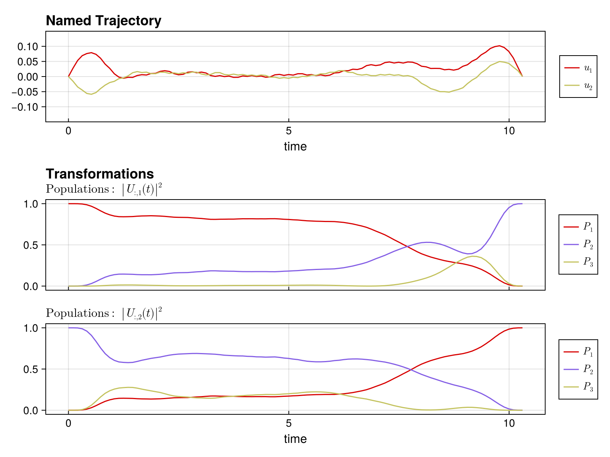
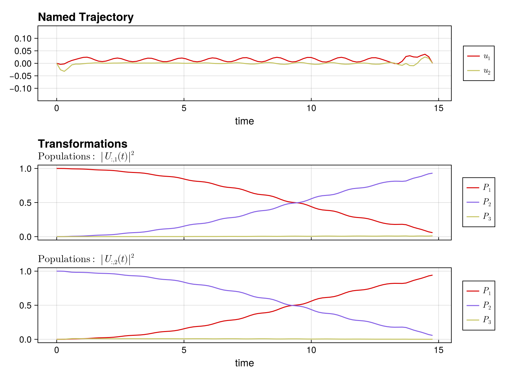

Leakage Suppression
When working with multilevel quantum systems (like transmons), population can "leak" from the computational subspace to higher energy levels. This guide shows how to suppress leakage in Piccolo.jl.
The Problem
Consider a 3-level transmon where we want to implement gates only on the |0⟩ and |1⟩ states. During optimization, population might temporarily occupy |2⟩, which can:
- Reduce gate fidelity
- Cause errors in subsequent operations
- Lead to non-unitary dynamics if |2⟩ decays
EmbeddedOperator
The key tool for handling subspace gates is EmbeddedOperator. It creates a full unitary that acts as the specified gate on the computational subspace and as identity on leakage levels.
For a 3-level system with 2-level computational subspace:
\[U_{\text{embedded}} = \begin{pmatrix} U_{\text{gate}} & 0 \\ 0 & I \end{pmatrix}\]
Basic Usage
using Piccolo
using Random
Random.seed!(42)
# Create a 3-level transmon
sys = TransmonSystem(levels = 3, δ = 0.2, drive_bounds = [0.4, 0.4])
# Define X gate in computational subspace
U_goal = EmbeddedOperator(:X, sys)
size(U_goal.operator)(3, 3)U_goal.subspace2-element Vector{Int64}:
1
2Construction Options
# From symbol (gate name)
U_X = EmbeddedOperator(:X, sys)
U_H = EmbeddedOperator(:H, sys)
# From matrix
custom_gate = ComplexF64[1 0; 0 exp(im * π / 4)] # T gate
U_T = EmbeddedOperator(custom_gate, sys)EmbeddedOperator{ComplexF64}(ComplexF64[1.0 + 0.0im 0.0 + 0.0im 0.0 + 0.0im; 0.0 + 0.0im 0.7071067811865476 + 0.7071067811865475im 0.0 + 0.0im; 0.0 + 0.0im 0.0 + 0.0im 0.0 + 0.0im], [1, 2], [3])Accessing Subspace Information
# Computational subspace indices
U_goal.subspace2-element Vector{Int64}:
1
2# Leakage indices in isomorphic vector space
leak_indices = get_iso_vec_leakage_indices(U_goal)
leak_indices8-element Vector{Int64}:
3
6
9
12
13
14
16
17Leakage via PiccoloOptions
The easiest way to add leakage handling is through PiccoloOptions.
Add Leakage Objective
Penalize population in leakage states with a soft cost:
opts_cost = PiccoloOptions(
leakage_cost = 10.0, # Weight on leakage penalty
display = :silent,
)PiccoloOptions(:silent, false, nothing, 1.0, true, false, false, 0.01, 10.0)Add Leakage Constraint
Enforce a hard bound on leakage:
opts_constraint = PiccoloOptions(
leakage_constraint = true,
leakage_constraint_value = 1e-3, # Max 0.1% leakage
display = :silent,
)PiccoloOptions(:silent, false, nothing, 1.0, true, false, true, 0.001, 0.01)Both Together
opts = PiccoloOptions(
leakage_cost = 10.0,
leakage_constraint = true,
leakage_constraint_value = 1e-3,
display = :silent,
)PiccoloOptions(:silent, false, nothing, 1.0, true, false, true, 0.001, 10.0)Complete Example: X Gate on 3-Level Transmon
# 1. Create multilevel system
sys = TransmonSystem(levels = 3, δ = 0.2, drive_bounds = [0.15, 0.15])
# 2. Define embedded gate
U_goal = EmbeddedOperator(:X, sys)
# 3. Create trajectory
T, N = 20.0, 100
times = collect(range(0, T, length = N))
pulse = ZeroOrderPulse(0.05 * randn(2, N), times)
qtraj = UnitaryTrajectory(sys, pulse, U_goal)
# 4. Configure leakage suppression
opts = PiccoloOptions(
leakage_cost = 5.0,
leakage_constraint = true,
leakage_constraint_value = 1e-3,
display = :silent,
)
# 5. Solve
qcp = SmoothPulseProblem(qtraj, N; Q = 100.0, piccolo_options = opts)
solve!(
qcp;
max_iter = 150,
verbose = false,
print_level = 1,
)
fidelity(qcp)0.8766094990494437Manual Leakage Objectives and Constraints
For more control, add leakage handling manually using LeakageObjective and LeakageConstraint. Both take the leakage indices in the isomorphic vector space:
traj = get_trajectory(qcp)
leak_indices = get_iso_vec_leakage_indices(U_goal)
# Leakage objective (soft penalty)
leak_obj = LeakageObjective(leak_indices, :Ũ⃗, traj; Qs = fill(10.0, N))
# Leakage constraint (hard bound)
leak_constraint = LeakageConstraint(1e-3, leak_indices, :Ũ⃗, traj)NonlinearKnotPointConstraint on [:Ũ⃗], inequality, 100 times (g_dim = 8)Strategies for Difficult Problems
1. Start Without Leakage Constraints
Get a working solution first, then add constraints:
qtraj_warm is mutated in-place by Step 1's solve, so Step 2 automatically warm-starts from the unconstrained 0.999-fidelity solution.
T_warm = 10.0
times_warm = collect(range(0, T_warm, length = N))
pulse_warm = ZeroOrderPulse(0.05 * randn(2, N), times_warm)
qtraj_warm = UnitaryTrajectory(sys, pulse_warm, U_goal)
# Step 1: Optimize without leakage constraints
opts_initial = PiccoloOptions(timesteps_all_equal = true, display = :silent)
qcp_initial =
SmoothPulseProblem(qtraj_warm, N; Q = 100.0, R = 1e-3, piccolo_options = opts_initial)
solve!(qcp_initial; max_iter = 100, print_level = 1)
fidelity(qcp_initial)0.9999996777278716Populations before leakage suppression — note the brief excursion into the leakage level (P_3) during the gate:
using CairoMakie
plot_unitary_populations(get_trajectory(qcp_initial))
Step 2: Add leakage suppression
Warm-started from the unconstrained solution above, the optimizer now has to bend that trajectory to satisfy the leakage bound — much easier than starting from a random guess.
opts = PiccoloOptions(
leakage_cost = 1.0,
leakage_constraint = true,
leakage_constraint_value = 1e-2,
timesteps_all_equal = true,
display = :silent,
)
qcp_leakage = SmoothPulseProblem(qtraj_warm, N; Q = 100.0, R = 1e-3, piccolo_options = opts)
solve!(qcp_leakage; max_iter = 150, print_level = 1)
fidelity(qcp_leakage)0.955398322320784Populations after leakage suppression — P_3 is now pinned near zero throughout the gate, at a small fidelity cost:
plot_unitary_populations(get_trajectory(qcp_leakage))
2. Increase Gate Time
Faster gates often have more leakage. Try a longer gate time if leakage is high.
3. Use More Levels
Include more levels to capture dynamics accurately:
sys_4level = TransmonSystem(levels = 4, δ = 0.2, drive_bounds = [0.2, 0.2])QuantumSystem: levels = 4, n_drives = 24. Reduce Drive Amplitude
Lower drives can reduce leakage:
sys_low_drive = TransmonSystem(levels = 3, δ = 0.2, drive_bounds = [0.1, 0.1])QuantumSystem: levels = 3, n_drives = 2See Also
- Operators - EmbeddedOperator details
- Quantum Systems - Creating multilevel systems
- Objectives - LeakageObjective documentation
- Constraints - LeakageConstraint documentation
This page was generated using Literate.jl.